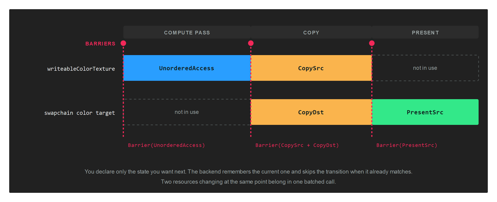
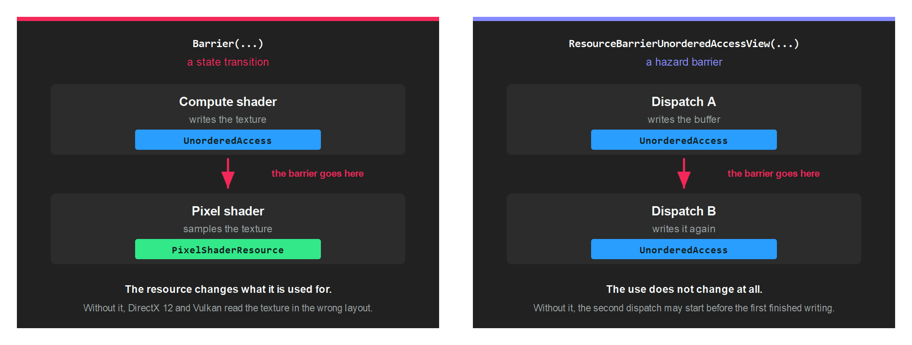

Barriers
At any moment a GPU resource sits in a state that reflects what it is being used for: a render target, a shader resource, the source of a copy, the image being presented. Changing that use requires telling the backend, and the call that does it is a barrier.
Some backends track that state for you and accept the call without doing anything. Others need it, and render incorrectly when it is missing. Record a barrier every time a resource changes use, whichever backend you happen to be running: one that is not needed costs nothing, and one that is missing stays invisible until the code reaches a machine that does need it.
The model
You declare only the state you want next. There is no source state parameter anywhere in the API, because each backend already knows where the resource is and skips the transition when it already matches.

Barriers are recorded on a CommandBuffer, outside any render pass, and take effect in the order they were recorded relative to the rest of that buffer.
Buffer barriers
Buffer.Barrier names a buffer and the state to move it into.
commandBuffer.Barrier(new Buffer.Barrier(this.constantBuffer, Buffer.StateFlags.UniformBuffer));
Buffer.StateFlags
| Buffer.StateFlags | Value | Description |
|---|---|---|
| None | 0 | No state. |
| CopySrc | 1 | Source of a copy. |
| CopyDst | 2 | Destination of a copy. |
| VertexBuffer | 4 | Read by the input assembler as vertices. |
| IndexBuffer | 8 | Read by the input assembler as indices. |
| UniformBuffer | 16 | Read as a constant buffer. |
| ShaderResource | 32 | Read by a shader. |
| UnorderedAccess | 64 | Written by a shader, usually a compute shader. |
Texture barriers
Texture.Barrier works the same way, and its constructor defaults the subresource range to the whole texture.
commandBuffer.Barrier(new Texture.Barrier(this.texture, Texture.StateFlags.PixelShaderResource));
Texture.StateFlags
| Texture.StateFlags | Value | Description |
|---|---|---|
| None | 0 | No state. |
| CopySrc | 1 | Source of a copy. |
| CopyDst | 2 | Destination of a copy. |
| PixelShaderResource | 4 | Sampled by a pixel shader. |
| NonPixelShaderResource | 8 | Sampled by any other stage. |
| RenderTarget | 16 | Drawn into as a colour attachment. |
| UnorderedAccess | 32 | Written by a shader. |
| DepthRead | 64 | Used as a depth buffer for reads. |
| DepthWrite | 128 | Used as a depth buffer for writes. |
| ResolveSrc | 256 | Source of a multisample resolve. |
| ResolveDst | 512 | Destination of a multisample resolve. |
| PresentSrc | 1024 | Handed to the swapchain for presentation. |
Subresources
Texture.Barrier carries four extra fields that narrow the transition to part of the texture:
| Field | Type | Description |
|---|---|---|
| firstMip | uint |
First mip level to transition. |
| numMips | uint |
Number of mip levels. |
| firstLayer | uint |
First array layer to transition. |
| numLayers | uint |
Number of array layers. |
Warning
The constructor sets numMips and numLayers to the whole texture. Building the struct with an object initializer instead leaves both at 0, and a barrier covering zero subresources transitions nothing. Use the constructor, then narrow the range if you need to:
var barrier = new Texture.Barrier(this.texture, Texture.StateFlags.PixelShaderResource);
barrier.firstMip = 2;
barrier.numMips = 1;
commandBuffer.Barrier(barrier);
The range narrows what you are asking for, not what you are guaranteed. A backend may transition more of the resource than you named, so write the range you need and do not rely on the rest of the texture keeping its previous state.
Note
The state values are bit flags and combine with |, which is what the engine does internally when a texture is read by both pixel and non-pixel stages.
Batching
Every overload of Barrier ends at the same two-span method, and each call becomes one native barrier command. Transitioning several resources at one point belongs in one call:
graphicsCommandBuffer.Barrier(new[]
{
new Texture.Barrier(this.writeableDepthTexture, Texture.StateFlags.NonPixelShaderResource),
new Texture.Barrier(this.writeableColorTexture, Texture.StateFlags.UnorderedAccess),
});
The five overloads are:
| Overload | Use |
|---|---|
Barrier(Buffer.Barrier) |
One buffer. |
Barrier(Texture.Barrier) |
One texture. |
Barrier(ReadOnlySpan<Buffer.Barrier>) |
Several buffers. |
Barrier(ReadOnlySpan<Texture.Barrier>) |
Several textures. |
Barrier(ReadOnlySpan<Buffer.Barrier>, ReadOnlySpan<Texture.Barrier>) |
Both at once. |
When you need one
| Situation | Transition to |
|---|---|
| Before a compute shader writes a texture | Texture.StateFlags.UnorderedAccess |
| Before a pixel shader samples it | Texture.StateFlags.PixelShaderResource |
| Before a vertex or compute shader samples it | Texture.StateFlags.NonPixelShaderResource |
| Before a copy or a blit | CopySrc on the source, CopyDst on the destination |
| Before presenting a swapchain texture you wrote yourself | Texture.StateFlags.PresentSrc |
| After updating a constant buffer that a shader will read | Buffer.StateFlags.UniformBuffer |
| Before a compute shader writes a buffer | Buffer.StateFlags.UnorderedAccess |
A full pass, from CopyToDepthTextureTest:
// Compute writes both textures...
graphicsCommandBuffer.Barrier(new[]
{
new Texture.Barrier(this.writeableDepthTexture, Texture.StateFlags.NonPixelShaderResource),
new Texture.Barrier(this.writeableColorTexture, Texture.StateFlags.UnorderedAccess),
});
// ...then the result is copied into the swapchain...
graphicsCommandBuffer.Barrier(new Texture.Barrier(this.writeableColorTexture, Texture.StateFlags.CopySrc));
graphicsCommandBuffer.Barrier(new Texture.Barrier(swapchainColor, Texture.StateFlags.CopyDst));
// ...and the swapchain is handed over for presentation.
graphicsCommandBuffer.Barrier(new Texture.Barrier(swapchainColor, Texture.StateFlags.PresentSrc));
A ResourceSet already knows its barriers
Creating a ResourceSet works out, from the layout, the state each resource has to be in. You do not repeat that by hand for resources bound through a set. CollectBarriers returns the list when you are writing your own submission code:
var bufferBarriers = new List<Buffer.Barrier>();
var textureBarriers = new List<Texture.Barrier>();
resourceSet.CollectBarriers(bufferBarriers, textureBarriers);
The other barrier
ResourceBarrierUnorderedAccessView shares part of its name with Barrier and does something different. It is not a state transition. It says that two pieces of work using a resource in the same way have to be ordered against each other.

commandBuffer.Dispatch2D(width, height);
commandBuffer.ResourceBarrierUnorderedAccessView(this.buffer);
commandBuffer.Dispatch2D(width, height);
Without it, the second dispatch is free to begin before the first has finished writing, and each reads whatever happens to be there. There is one overload for a Buffer and one for a Texture.
Record it for the same reason you record a state transition: the backends that need the ordering get it, and the ones that already guarantee it ignore the call.
Getting it wrong
A missing barrier fails quietly. Where the backend does not need one, everything draws as though the code were correct, so the defect travels undetected until it reaches a machine that does.
Two habits catch it early:
- Create the device with a
ValidationLayer. A resource left in the wrong state is then reported as an error naming the resource, rather than as a picture that looks slightly wrong. See GraphicsContext. - Run the application on more than one backend before shipping. The backend is decided by the
GraphicsContextclass you instantiate, so trying another is a one-line change.